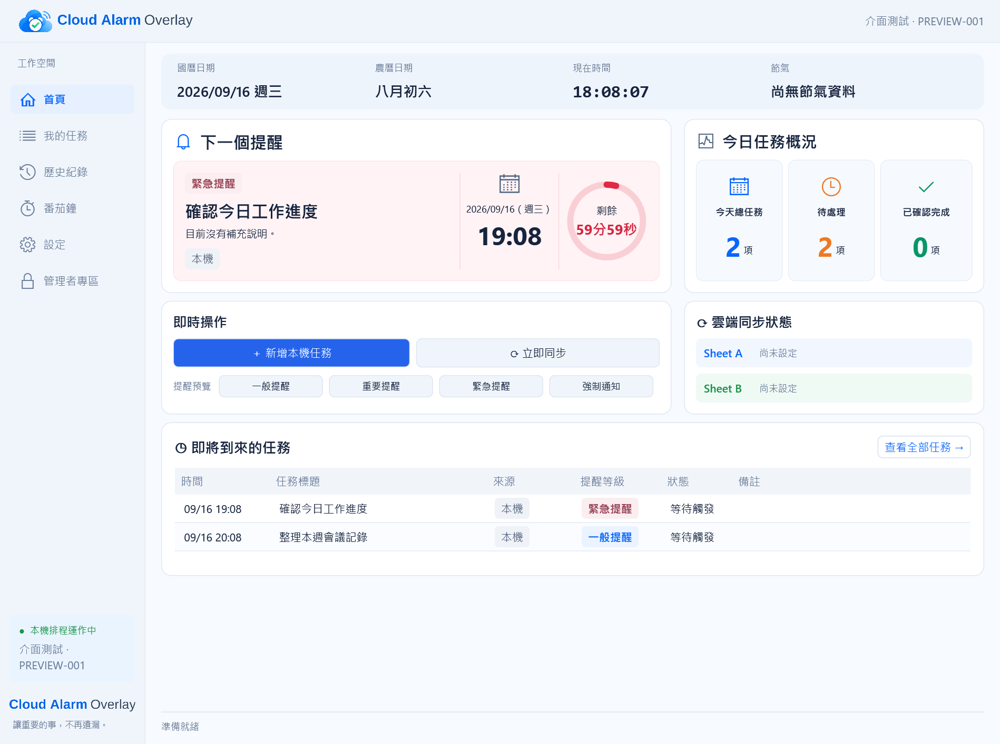
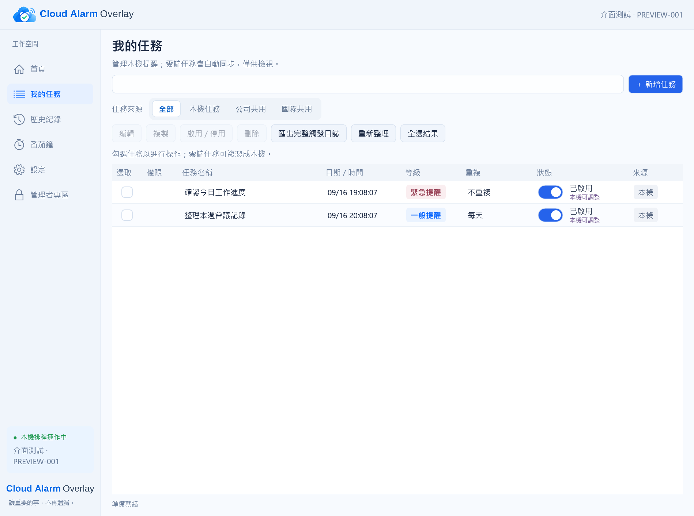
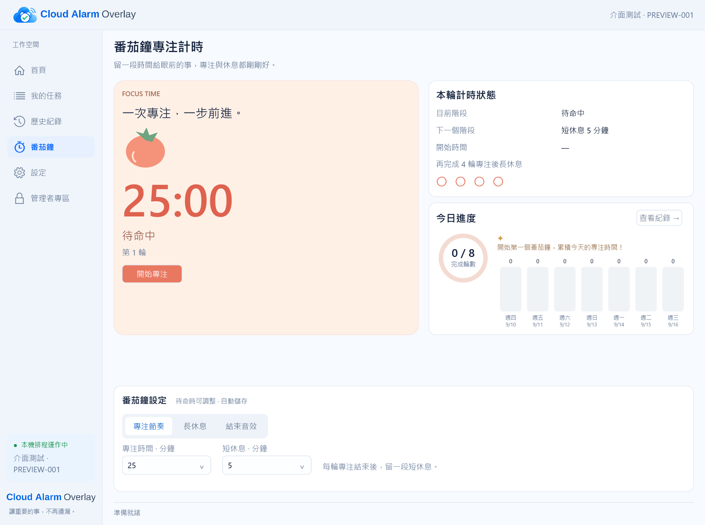
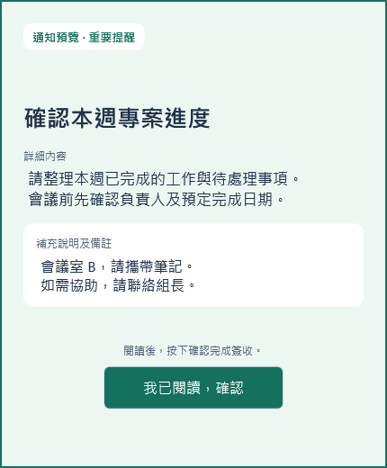

本機與團隊任務
安排一次性或重複的本機提醒，也能讀取 Google Sheets 公開 CSV，顯示公司與團隊任務。
把個人待辦與團隊任務放在同一個地方。Cloud Alarm Overlay 會在指定時間提醒、協助簽收，也讓你留一段時間好好專注。

BUILT FOR EVERYDAY WORK
平常使用保留簡單的操作，需要管理時也有完整的設定與追蹤工具。
安排一次性或重複的本機提醒，也能讀取 Google Sheets 公開 CSV，顯示公司與團隊任務。
依重要程度顯示不同通知。最高級通知須輸入畫面上的數字確認碼，避免匆忙略過。
依自己的節奏設定專注與休息時間，查看每日進度及完成紀錄。
查詢提醒和簽收、匯出紀錄；管理者可設定同步來源、政策、備份及還原。
HOW IT WORKS
先讓這台電腦有自己的識別資訊，再依需求加入本機或團隊任務。
首次啟動時，填寫裝置代碼與顯示名稱，方便辨識這台電腦。
自行建立本機任務；管理者也能連接 Google Sheets 公開 CSV 來源。
程式常駐系統匣，到時間顯示通知，提醒結果留在本機供日後查詢。
TAKE A LOOK
下方是目前版本的淺色介面截圖；點擊圖片可查看完整大小。

用來源篩選任務，一眼看到時間、重要程度與啟用狀態。

專注計時、休息節奏與每天的完成進度並排呈現。
CLEAR WHEN IT MATTERS
通知會顯示任務內容與補充說明，並依提醒等級使用不同的確認方式。重要的工作不會只留下模糊的一聲提示。

YOUR DATA, YOUR COMPUTER
Google Sheets 同步採公開 CSV 單向讀取；本機任務、簽收和操作紀錄不會回寫到 Google Sheets。管理者可在程式內建立備份，方便還原這台電腦的資料。